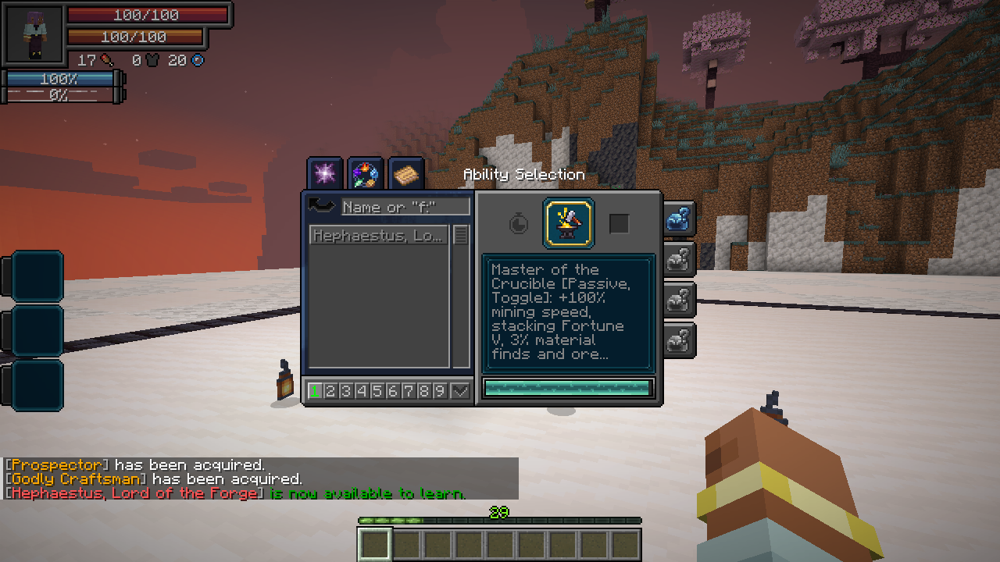
On this page
Obtaining
Missing a component? The Archivist offers one paid Unique Skill lesson per player. The taught component still needs to be mastered before synthesis.
Owning a component reveals an unfinished Hephaestus entry in Tensura’s Skills → Ultimate menu. Slot and activate that entry to open Synthesis. Complete the listed conditions, choose Synthesize Hephaestus, and confirm the dialog.
Awakening bonuses are applied before the acquisition cost. Synthesis waits until awakening is finished. Already-awakened players can qualify later. Hephaestus replaces both components and begins learned, unmastered. Engraving knowledge, stored materials and affected presets are retained.
The crafting achievement requires an actual craft or smithing result while you have Godly Craftsman. Tensura’s Smithing Bench, the vanilla smithing table and crafting tables are supported, including shift-click. Previewing a recipe does not count. The eligible equipment can be changed with the heavenlyrestriction:hephaestus_synthesis_equipment item tag. There is no EP threshold.
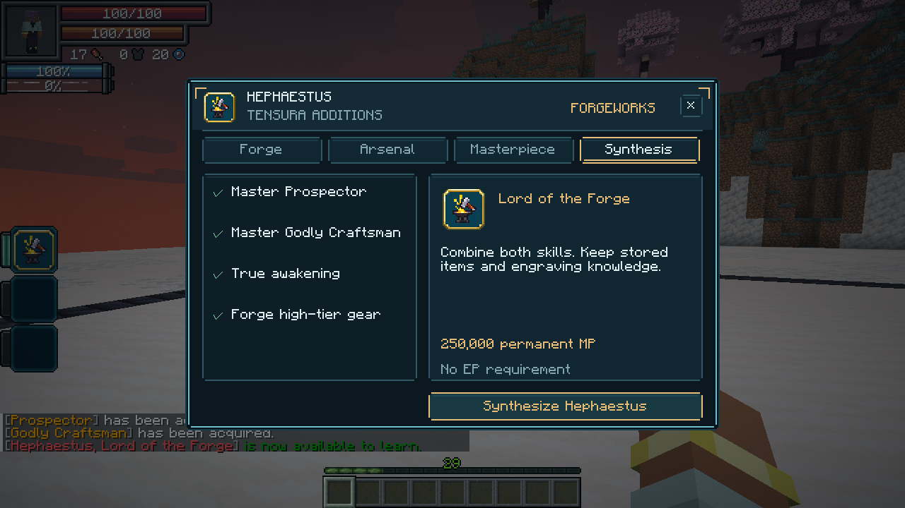
Master of the Crucible · Passive, Toggle
- +100% mining speed, Fortune V added to the tool’s Fortune, and a 3% material-find chance when properly mining stone or deepslate.
- Subtle ore markers within 32 blocks, differentiated by material, including magic ore.
- Equipment you personally forge gains +20% weapon attack damage, armor and armor toughness, and 50% reduced durability damage.
- Prevents new curse generation on all equipment while toggled on, including growth and engraving rolls. Existing curses remain, and Tsukumogami generation is unchanged.
Forging bonuses apply once per item and remain on the equipment. They reduce ordinary wear and native EP durability loss; maximum durability is unchanged. Damage type: none directly; improved equipment retains its normal damage type.
Divine Forge · Active, Press
Use the workshop’s Forge tab. Select equipment on the left, choose a forge action and material on the right, then press the gold action button. Utilities opens crafting, refining, engraving and storage. Reforge applies the bonus to equipment crafted before you acquired Hephaestus.
Open the forge to craft, use Tensura’s native refining and engraving menus, access inherited storage, temper equipment or repair it. Recover returns the previous Prospector refining ingredients to your inventory.
Overcap engraving research: Lord of the Forge can retain levels above an engraving’s ordinary maximum, within its research limits. Applying an Orb-eligible overcap automatically marks the receiving equipment as already Chromatic-infused, so it cannot take another Orb. Normal capped engravings leave the Orb upgrade available. Native engraving blacklists still apply. Godly Craftsman cannot research overcap engravings; previously stored overcap knowledge is normalized to the ordinary engraving maximum. Ordinary enchantment bonuses remain unchanged.
Reforge / Temper: 2,000 magicules and one selected material. Reforging signs unmarked equipment and applies the ordinary forging benefits. Signed equipment from another smith cannot be overwritten.
| Temper | Weapon effect | Worn armor effect |
|---|---|---|
| Keen | Increased critical-hit damage | Increased critical-hit damage |
| Piercing | Ignores part of armor’s damage reduction | Ignores part of armor’s damage reduction |
| Conductor | Increased elemental damage | Reduced elemental damage taken, including native SHP damage |
| Enduring | Further reduces item wear | Further reduces that armor piece’s ordinary and EP wear |
Iron provides 10%, Diamond 20%, Netherite 30%, and Hihiirokane 35% temper strength. Only one temper applies; replacing it consumes the material again. Tempers are separate from enchantments, engravings and the Chromatic Orb.
Armor tempers activate only in their proper equipped slot. Helmet and boots contribute 15% each, chestplate 40%, and leggings 30% of their material’s strength. A matching full set contributes the listed material percentage once, up to 35%; mixing tempers divides that total among their effects. For example, a Diamond chestplate contributes 8% critical damage with Keen, 8% armor penetration with Piercing, or 8% elemental damage reduction with Conductor. Armor’s offensive bonuses add to the weapon’s bonus rather than multiplying it. Enduring’s full material strength applies to that piece’s wear instead of using the slot weight.
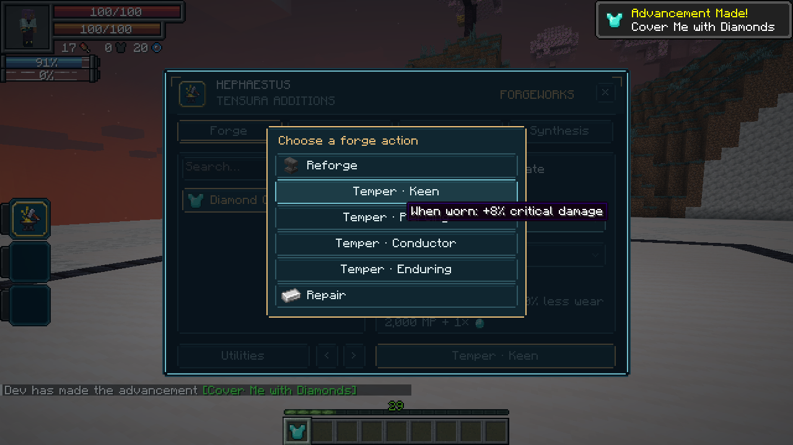
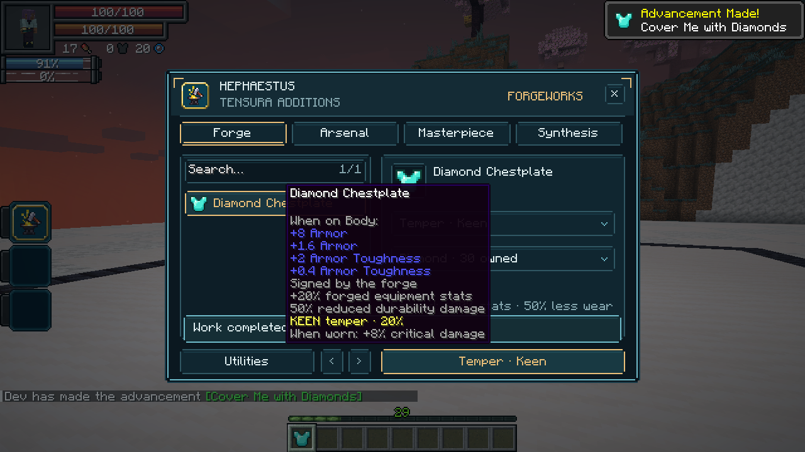
Repair: 500 magicules and one selected material. Restores 30% / 60% / 90% / 100% of ordinary durability and native EP durability, respectively, without changing engravings or the Orb’s one-use history. Damage type: none directly.
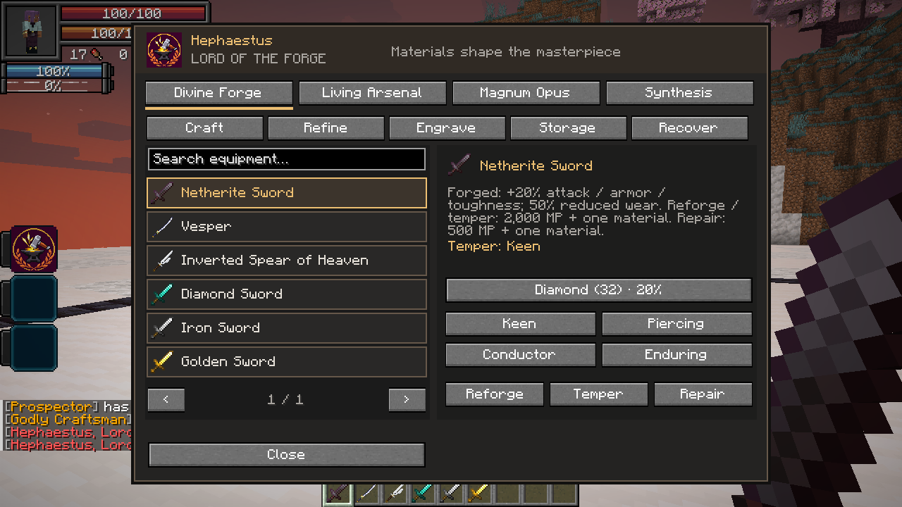
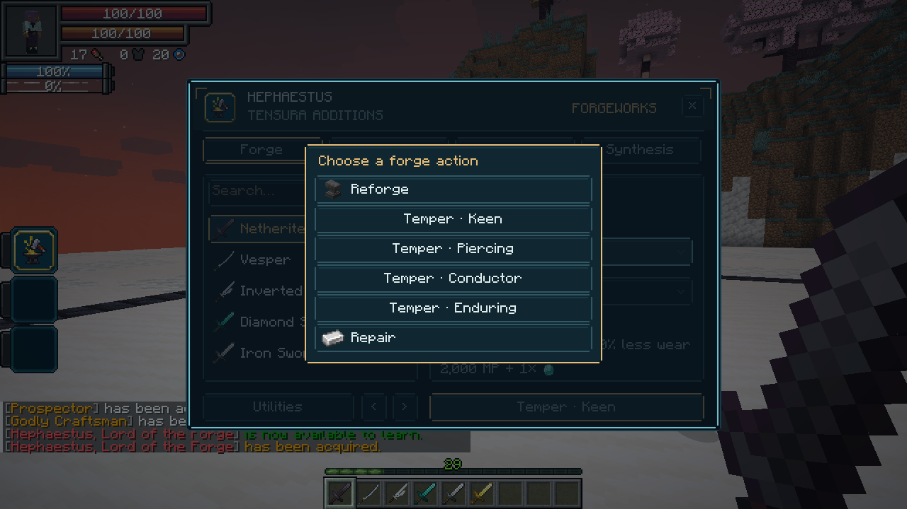
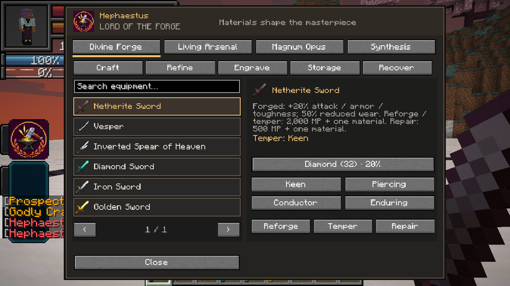
Living Arsenal · Active, Press
Deploy up to six actual melee weapons from your inventory. They hover in a compact formation and take turns making curved slashes with short, tapered wakes, inspired by Terraria’s Terraprisma. The blades turn into each cut. A shared 24-tick round spaces attacks evenly across the deployed weapons; each weapon attacks once per round.
Weapons prioritize your attack target, then visible hostile mobs or combat opponents within 32 blocks. They use their own damage, enchantments, engravings and applicable wear reduction. All eligible deployed weapons gain EP from your qualifying kills, using Tensura’s normal equipment-growth rates, engravings, caps and evolutions. Growth remains on the item after recall; normal held equipment still receives its usual reward. Allies are excluded and normal server PvP rules apply.
Cost: 1,000 magicules per weapon to deploy, then 10 magicules per weapon each second. Deployed weapons are unavailable for other uses. Activate again to manage the arsenal. Check inventory weapons on the left and choose Deploy selected. The six-slot rack on the right shows deployed blades: click a blade to recall it. Add weapons while the arsenal is active. Shift-activate or choose Recall all to return everything. Death, logout, dimension travel or losing access to the skill recalls the weapons; saved escrow protects them across a restart.
Damage type: Physical weapon attacks. Native elemental conversions and engraving follow-ups retain their own types and defenses.
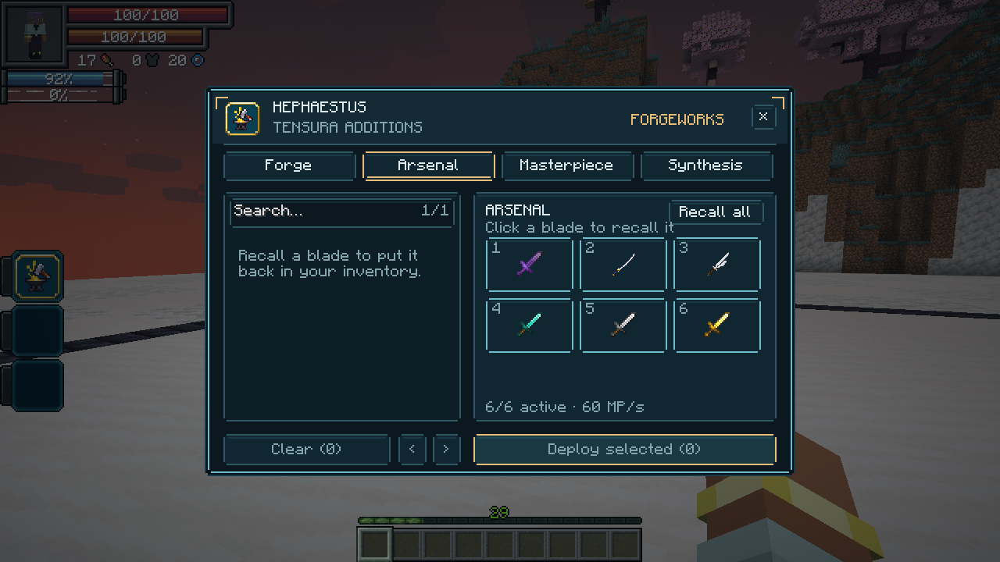
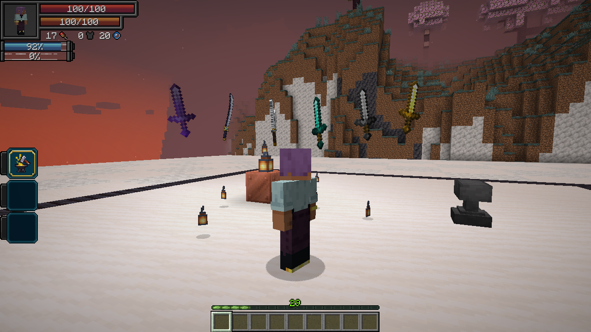
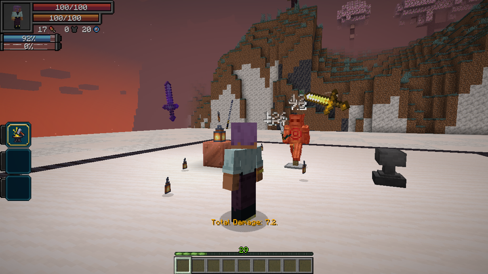
Magnum Opus · Active, Press
Open Masterpiece, select your forged equipment and a material, then Designate masterpiece and confirm.
Designate one personally forged item as your masterpiece. It receives +50% equipment stats and 75% reduced durability damage, replacing the ordinary +20% / 50% forging benefits. The item gains a glint and gold masterpiece identification; a deployed masterpiece has a golden wake.
Cost: 50,000 magicules and two selected materials, Diamond or better. Confirming a new masterpiece removes the old item’s designation, including when that item is stored elsewhere. Its ordinary forging benefits remain.
Damage type: none directly. There is no additional transformation or Overforge activation.
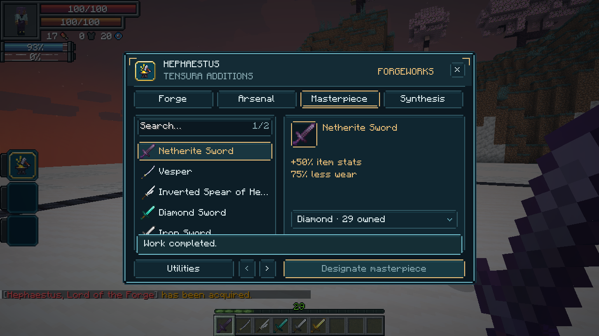
All forge operation and arsenal costs also respect Schema’s resource-cost penalties.